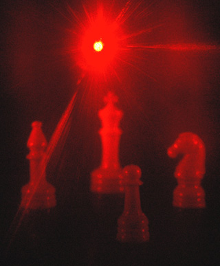

Holography

The above image was taken through a transmission hologram. The hologram was illuminated from behind by a helium-neon laser which has been passed through a diverging lens to spread the beam over the hologram.
Holography is "lensless photography" in which an image is captured not as an image focused on film, but as an interference pattern at the film. Typically, coherent light from a laser is reflected from an object and combined at the film with light from a reference beam. This recorded interference pattern actually contains much more information that a focused image, and enables the viewer to view a true three-dimensional image which exhibits parallax. That is, the image will change its appearance if you look at it from a different angle, just as if you were looking at a real 3D object. In the case of a transmission hologram, you look through the film and see the three dimensional image suspended in midair at a point which corresponds to the position of the real object which was photographed.
These three images of the same hologram were taken by positioning the camera at three positions, moving from left to right. Note that the pawn appears on the left side of the king in the left photo, but transitions to the right of the king as you sweep your eye across the hologram. This is real parallax, which tells you that the image is truly 3-dimensional. Each perspective corresponds to looking through the hologram at a particular point.
|